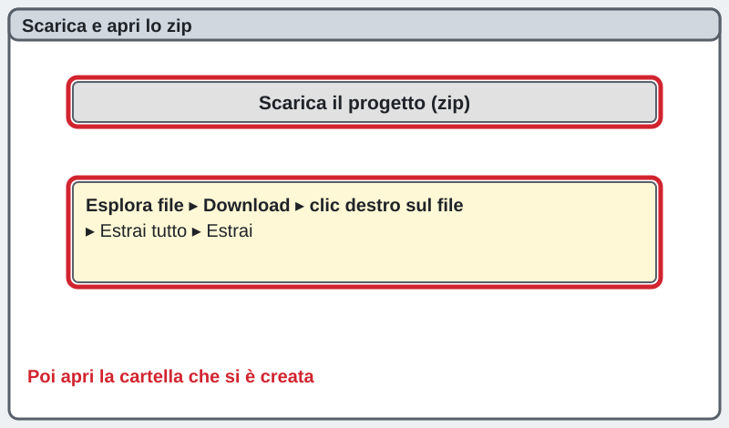
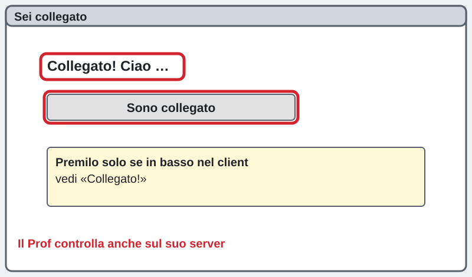
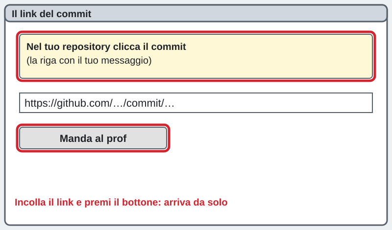
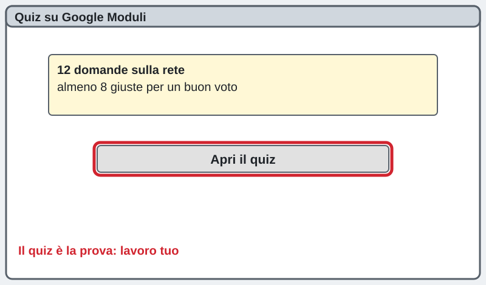

Ora 2: provi il client vero collegato al server
3INF, 04/11/2026. Il Prof ha acceso il server sul suo PC (porta 5050).
La pagina viene aggiornata spesso durante la lezione: premi F5 per vedere la versione nuova.
Chi sei?
Scrivi nome e cognome: serve al cruscotto per vedere a che punto sei.
Il tuo andamento e gli aiuti
Come sto andando Il mio comportamento Il monitor della lezioneTorna all'ora 1Sei bloccato? Scrivi la domanda nella casella dell'assistente in fondo alla pagina: ti risponde subito. Alza la mano solo se il PC non funziona.
0. Scarica il progetto
Premi il bottone: si scarica la cartella compressa con il Mastermind versione 4. Poi apri Esplora file, vai in Download, clic destro sul file e scegli Estrai tutto.
Scarica il progetto (zip)
1. Apri il client versione 4
In Lazarus apri il menu Progetto in alto e scegli Apri progetto.... Cerca la cartella del Mastermind v4, apri Client e scegli ClientMastermind.lpi.
2. Premi F9: vinci subito
Premi il tasto F9 sulla tastiera. La prima volta Lazarus impiega un po'. Poi compare il client con la tavola di legno. Premi Gioca da solo e prova un tentativo: funziona anche senza rete.
3. Fallo tuo: collegati al Prof
Nella casella IP del server scrivi l'indirizzo che il Prof ha scritto alla lavagna. Nella casella del nome scrivi il TUO nome. Premi Connetti.
Se compare un errore rosso, leggi le parole: dicono cosa controllare (IP, server acceso). Puoi giocare con "Gioca da solo" e chiedere all'assistente.
4. FATTO: sei collegato
In basso compare Collegato! Ciao e il tuo nome. Dietro le quinte il tuo programma ha mandato STATO;il tuo nome e il server ha risposto. Questo è il momento che conta per il voto: client collegato.

5. Gioca e guarda le righe
Quando il Prof preme Via, clicca 4 colori e premi Prova. Ogni volta il tuo programma manda GUESS;nome;codice e il server risponde RESULT. I piolini neri e bianchi sono quelli del RESULT.
6. Trova la porta nel codice
Premi Ctrl + F in Lazarus. Scrivi PORTA_SERVER e premi Trova. Sei dentro UnitRete.pas: il valore è 5050. Per aprire UnitRete.pas: tasto Ctrl + F12, doppio clic su UnitRete.
7. Trova dove si legge una riga
Sempre in UnitRete.pas cerca la parola Elabora. Qui la rete legge il primo campo e decide quale evento lanciare. Cerca anche GUESS: è la riga che il client scrive.
Spiega a un compagno, con parole tue: perché UnitRete non ha bisogno di nessuna finestra?
8. Fallo tuo: il titolo con il tuo nome
Apri UnitInterfaccia.pas (Ctrl + F12) e cerca TITOLO_FORM. Cambia il testo tra gli apici con il tuo nome, per esempio come nello schema. Premi F9: il titolo della finestra è cambiato.
9. Mettilo su GitHub (browser)
Apri github.com nel browser, entra nel tuo repository, premi Add file (in alto a destra) e poi Upload files (Carica file). Trascina nella pagina la cartella Client con il tuo titolo.
10. Il commit chiaro
In basso scrivi nel riquadro il messaggio, una frase che dice COSA hai fatto. Poi premi il bottone verde Commit changes (Salva le modifiche).
Un buon messaggio dice cosa e perché: questo si vede nella storia del progetto.
Esempio di messaggio chiaro (scrivi il tuo, con parole tue):
Mastermind v4: provato il protocollo, titolo con il mio nome
10b. Manda il link del commit
Nel repository clicca il commit (la riga con il tuo messaggio). Scrivi qui sotto l'indirizzo che vedi nella barra del browser e premi il bottone: arriva da solo al Prof.

11. Il quiz sulla rete
Il quiz ha 12 domande su quello che hai provato. Per un buon voto serve almeno 8 su 12. Premi il bottone verde: si apre il Modulo Google.
Apri il quiz
Piano B: se il server non risponde
Torna alla pagina dell'ora 1 e usa il Prof finto: funziona senza rete. Oppure premi Gioca da solo nel client. Poi avvisa l'assistente nella casella d'aiuto.
বাংলা সাহায্য (se ti serve)
সার্ভার না পেলে "Gioca da solo" চাপো বা প্রথম পাতার নকল সার্ভার ব্যবহার করো। সংযুক্ত হলে "Collegato!" লেখা দেখা যাবে।